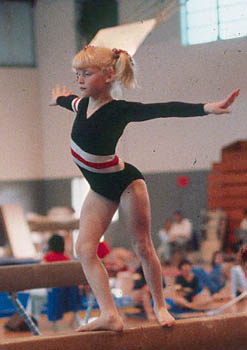

Kristie Phillips (USA)
1986 and 1987 American Cup AA
Champion
1987 US National Champion
1987 Pan Am Games AA Silver Medalist

Phillips competes in her home
state of Louisiana in November 1981.
Kristie was born on March 23,
1973 in Baton Rouge, Louisiana. She began her gymnastics career in her
home state, then trained for a while at the Atlanta School of Gymnastics.
She transferred to Karolyi's Gymnastics in 1984, trained briefly at SCATS in
California in early 1988, then returned to Karolyi's before the Seoul
Olympics. Kristie missed making the Olympic team by only tenths of a point.
She attended Louisiana State University and was a member of the cheerleading
squad. She moved to New York to pursue a career in acting and starred in a
1994 film called "Spitfire". After an 11-year absence from
competitive gymnastics, Kristie made a comeback in 1999, competing in both the
1999 and 2000 US Championships! She now coaches at her own gym in
Statesville, NC. She's married to Horatio Bannister, a
singer and songwriter. They have 3 children: a son and twin daughters.
Competition Results
- 1982
- Louisiana State Class II meet (children's division):
1st AA
-
- 1983
- Holiday Invitational (Class I, children):
1st Team, 1st AA
- Sweetheart Invitational (Class I, 9-11 age group):
1st AA
-
- 1984
- Canadian Classic: 7th AA, 2nd FX, 3rd UB
Jr. American Classic: 12th AA
- Peachtree Classic (children's division): 1st AA, 1st
UB, 1st B, 2nd FX, 5th V
-
- 1985
- Avignon International: 6th AA, 1st FX, 5th V, 5th B
- Jr. American Classic "B": 3rd AA
- US Championships (children's division): 1st AA
-
- 1986
- American Cup: 1st AA
- Canadian Classic: 6th Team, 1st AA, 1st V, 1st UB, 1st
FX, 6th B
- Intl. Mixed Pairs: 2nd Team
- Jr. American Classic: 1st AA
- Jr. US Championships: 1st AA
- US Olympic Festival: 1st AA, 1st V, 1st B, 1st FX
- USA-CHN Dual Meet: 2nd AA, 2nd FX, 4th V, 6th B
- World Sports Fair: 5th AA, 2nd V, 4th UB, 5th B, 5th
FX
-
- 1987
- American Cup: 1st AA, 1st B, 2nd FX, 3rd V, 3rd UB
- Intl. Mixed Pairs: 4th Team
- Pan American Games: 1st Team, 2nd AA, 1st FX, 3rd V
- USA-USSR Dual Meet: 2nd Team, 1st AA, 1st B, 3rd FX,
5th V, 5th UB
- US Classic: 1st AA
- US Championships: 1st AA, 1st B, 1st FX, 2nd V, 3rd UB
- World Championships: 6th Team, 45th AA
(prelims)
-
- 1988
- US Nationals: 9th AA, 2nd B
- US Olympic Trials: 8th AA
-
- 1996
- Reese's Intl. Cup: 1st AA
-
- 1996
- Reese's International Cup: 1st AA, 1st B, 2nd UB, 4th
FX
-
- 1997
- Reese's International Cup: 2nd AA
-
- 1998
- Reese's International Cup: 5th Team (with
Jessica Davis)
-
- 1999
- Reese's International Cup: 3rd AA
- Region VII Elite Zone Meet: 3rd AA, 2nd FX, 3rd B, 4th
UB
US Classic: 15th AA
US Championships: 23rd AA
2000
US Championships: 24th AA
This page was created on July 3, 1999 and was
last updated on July 18, 2021.
© Gymn Forum